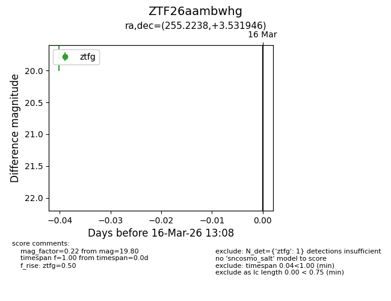
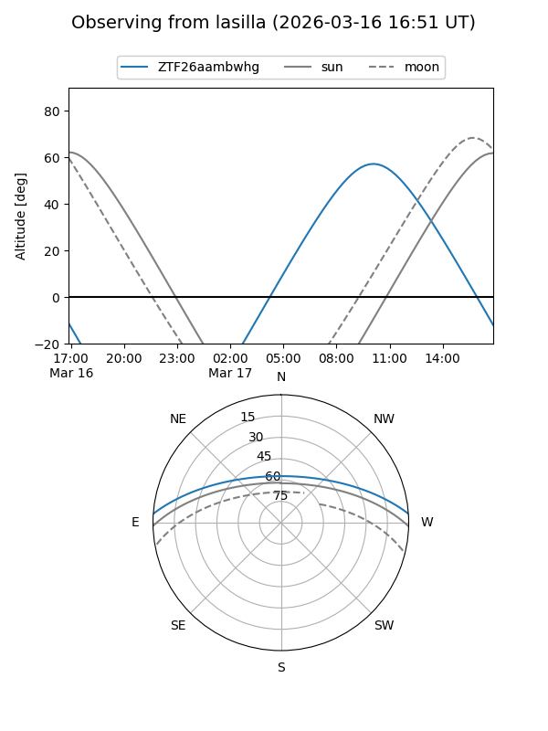
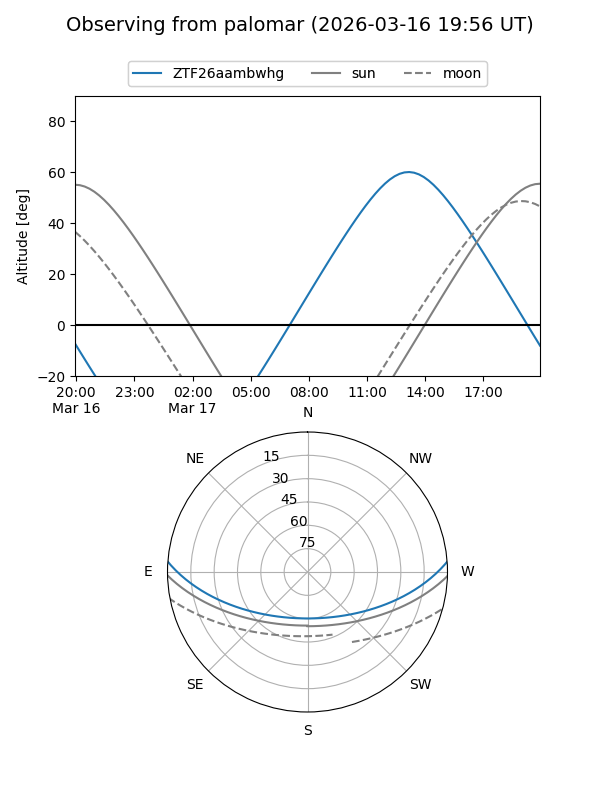

ZTF26aambwhg
Target ZTF26aambwhg at 2026-03-16 13:10
Aliases and brokers:
FINK: link
Lasair: link
ALeRCE: link
alt names
ZTF26aambwhg (ztf,fink_ztf)
Coordinates:
equatorial (ra, dec) = 255.2238,+3.53195
equatorial (HMS+DMS) = 17:00:53.71,+03:31:55.01
galactic (l, b) = (22.9091,+26.11193)
Flags:
Photometry:
last ztfg=19.80
1 ztfg detections
Lightcurve

Visibility


Additional plots